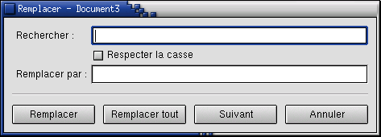

Dialogue remplacer

Rechercher
Entrez le mot que vous désirez rechercher dans cette boîte. Il s'agit de la chaîne de recherche. Cette commande recherche la chaîne de caractères ou de nombres que vous entrez. Ainsi, si vous recherchez en, vous trouverez les deux lettres au milieu du mot dent tout autant que le mot en.
Respecter la casse
Cette case à cocher détermine si la chaîne de caractères que vous recherchez doit contenir la même combinaison de lettres majuscules et minuscules que la chaîne de recherche. Si cette boîte est sélectionnée alors En ne se révélera pas identique à en. Si cette case n'est pas sélectionnée, en fournira les combinaisons En, EN, en et eN comme résultat de recherche.
Remplacer par
Entrez les caractères de remplacement que vous désirez employer dans cette boîte. Vous pouvez ne rien y entrer, dans ce cas le remplacement effacera simplement le texte trouvé. Il s'agit de la chaîne de remplacement.
Suivant
Cliquez sur ce bouton pour trouver l'occurrence suivante de la chaîne de recherche dans le document. AbiWord démarre la recherche à partir du point d'insertion et poursuit à partir du début du document lorsque sa fin est atteinte. La recherche s'arrête lorsque l'ensemble du document a été recherché une fois.
Remplacer
Ce bouton remplace le texte courant sélectionné de la chaîne de recherche par la chaîne de remplacement et se déplace à la prochaine occurrence de la chaîne de recherche qui suit la chaîne remplacée. (Ceci assure que le processus ne soit pas pris au piège si le texte de remplacement contient lui-même la chaîne que vous remplacez.) Si vous cliquez sur ce bouton avant de cliquer Suivant, vous rechercherez simplement la chaîne de recherche suivante.
Remplacer tout
Ce bouton recherche tout le document et remplace toutes les occurrences de la chaîne de recherche par la chaîne de remplacement. Faites attention en utilisant cette caractéristique. Par exemple, si vous désirez remplacer tous mots euro rencontrés dans votre document par dollar, ce bouton convertirait la phrase L'europe est un continent. par L'dollarpe est un continent.
Annuler
Ce bouton ferme le dialogue Remplacer.